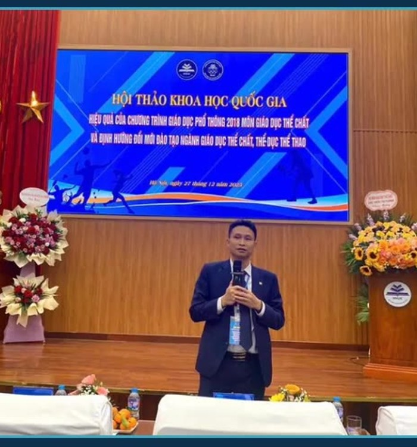

KHÔNG GIAN 01Hội thảo &
Hội thảo &
nghiên cứu khoa học
Tra cứu bài báo trong kỷ yếu, tham khảo dữ liệu học thuật, xem thư viện tư liệu và kiểm tra kiến thức.
Tra cứu bài báoKỷ yếu 2025Ảnh & video
Vào không gian nghiên cứu